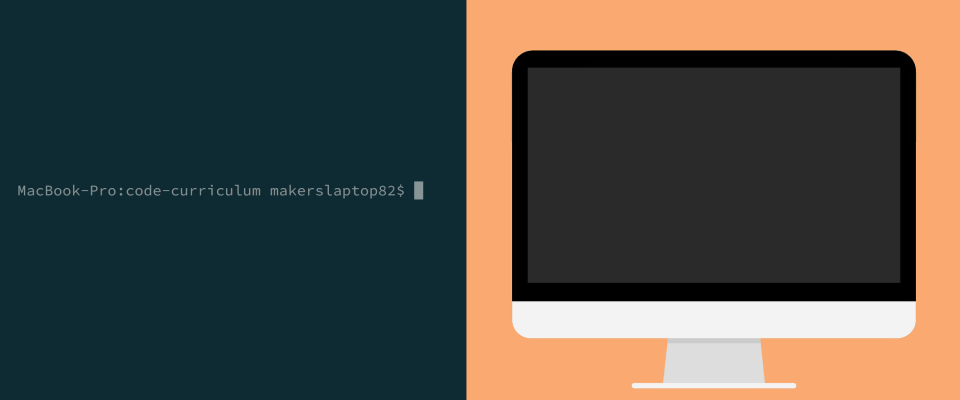
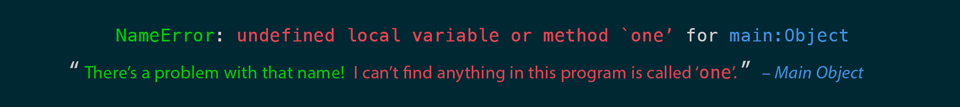

Exploring the World (Variables and Statements)
Where we're going
We're going to build a numeral calculator. It'll work just like a normal calculator, except we'll be able to use numerals (English words representing numbers) to do basic maths. Something like this:
> ONE + TWO
=> 3
> FOUR * FIVE
=> 20
Ruby numbers use
+for addition,-for subtraction,*for multiplication, and/for division. Our numeral calculator won't be able to do division, yet.
Introduction
We know now that typing irb into the console starts a REPL: the computer sets up a Ruby world, and we, the user, get the ability to write Ruby code to modify that world on-the-fly.

You might think this world starts off empty: but it doesn't.
What exists inside a Ruby program?
When the Universe began, the great computer in the sky ran a 'Universe' program, and created the Universe. It also created some denizens for that Universe: the moon and stars.
When our computer sets up a Ruby world, it creates a Universe ('main program function'), and it adds a bunch of useful denizens to it. In Ruby, we call these denizens 'objects'. One good example of such a 'pre-created' object are numbers.

Every object that's created:
- Knows something about itself, and
- Knows how to interact with other objects.
For numbers, each number that's created:
- Knows how much it's worth, and
- Knows how to interact with other objects (especially other numbers).

We can interact with these numbers in irb. Start irb from the console. Then, to call up a number:
- Type an instruction. In this case, we want to ask the program to read a number. So, we type
1. - Send your instruction to the program world by pressing 'Return'.
1
The pattern 'enter your instruction' followed by 'send your instruction to the program world' is the basis by which all REPL interactions happen.
Let's try this again with another number:
2
What just happened? We went into the program world, and asked for the number 2. The world fetched the number 2, and returned it to us.
What doesn't exist inside a Ruby program?
Shortly after the Universe began, the moon and stars came into being. But, it was a while before trees, dogs, human beings and cars showed up. What doesn't exist when a program world is created?
Let's try to ask the program world for something non-existent.
- Start
irbfrom the console. - Then, try to ask for something called
one.
one
Ugh. That looks tricky. But let's take a minute to understand what the world's trying to tell us:

In short, the program world is saying "you asked for something called one. It doesn't exist, as far as I can see."
So why does 1 exist and one doesn't? This is a choice the creators of Ruby made. They believed that plenty of people would want to use numbers using the glyph form 1 (or 2, 3, and so on). They believed that few people would want to use the numeral form one (or two, three and so on).
Bad news for them, then: that's exactly what we want to do. To do it, we're going to have to create something inside our program world: a name. Then, we're going to point our name to the number object that already exists.
Giving names to things
Since a Ruby program is your own Universe, you get to choose what things are called. This is called naming.
Naming is a big responsibility for a programmer. It's hard to give things sensible and meaningful names, so other users of the world (including other programmers) can manipulate the world without becoming confused by what things are. A lot of wasted programming time can be traced down to choosing a bad name for a new object in a program world.
One way to give an object a name is to make a label for it, and attach the object to that label. These labels are called variables, and the process of attachment is called assignment.
Let's try this out.
- Open
irb, and give the object1another name:one. - **(_In other words: define a variable
onethat points to the object referenced by the name1.)**_
In Ruby, we use
=to point names at objects. It's called the assignment operator.
one = 1
Whenever we ask the program world for the variable one, it will return the object that variable is pointing at:

Let's ask the program world for the object pointed to by the variable one:
one = 1
one
Nice! Now over to you: define names for:
2through10, and- as many numbers as you want until you get the point.
one = 1
two = 2
three = 3
four = 4
five = 5
six = 6
seven = 7
eight = 8
nine = 9
ten = 10
# and so on
Making objects interact
I mentioned earlier that numbers know:
- how much they're worth, and
- how to interact with other numbers.
Here's an example of that in action in irb:
1 + 2
In the case above, here's what's happening. The interpreter executes the code 1 + 1 character-by-character:
- The program world fetches the object referenced by the name
1. - The program world asks the object referenced by
1if it understands the message+. - the object referenced by
1says "yes, it means 'add the value of whatever number object comes after'". - The program world fetches the object referenced by the name
2. - The first object referenced by
1adds the value of the object referenced by2to itself. The result is returned to the program world. - The program world returns the result to the user:
3.
Here's the above, visually:
Notice that the interpreter doesn't 'add
1to1'. Instead, the first object (1) goes and gets another object (1) and then adds itself together. In Ruby, objects do all the work. The interpreter turns our code into instructions for objects to do things.
We call an expression like 1 + 2 a statement. (We did a statement earlier, too: one = 1 is a statement).
Since our variables one through ten (and possibly more) have already been defined, and point at the objects 1 through 10, we should be able to get our numeral calculator working straight away.
- Make the numeral calculator work in the REPL. You won't be able to do division just yet.
one = 1
two = 2
three = 3
four = 4
five = 5
six = 6
seven = 7
eight = 8
nine = 9
ten = 10
four * five
Variables and statements
We can assign names to the results of statements:
fifteen = 10 + 5
Here's another example:
one = 1
zero = one - one
This is the first example we've seen where the computer doesn't just read and execute a file from top-to-bottom, left-to-right. First,
10 + 5andone - oneare evaluated. Second, the result (15and0) is assigned to the variable. In Module 3, we'll learn some rules for deciding which 'chunk' of a line is executed first.
Objects that change, and objects that don't
Some objects change throughout the course of the program. In Module 5, we'll meet one of these kinds of objects: a string. We can bolt things onto these objects, and we can remove things from them, too. In Module 7, we'll meet another: an array. Again, we can shove things into and pull things out of these objects. These kinds of objects are known as mutable objects.
Some objects cannot change throughout the course of the program. Integers, like 1, are a good example. 1 is 1 is 1 is 1, and there's nothing we can do to change it. Even if we add 2 to 1, the program world just goes and fetches another object: 3.
1 doesn't turn into 3, it just stays as 1. Forever. Or, until we turn off the program.
In Ruby, we give these never-changing objects a special kind of name: a constant. Just like variables, we assign constants using =. But, there are special rules for naming constants: they have to start with a capital letter. Conventionally, the entire name is in capital letters.
Here's an example of assigning a name, CONSTANT, to an object called object:
CONSTANT = object
When we start the program world, some constants come into existence automatically. One of these is RUBY_VERSION.
- Open a REPL, and output the
RUBY_VERSIONconstant. - Answer this: why isn't
RUBY_VERSIONjust calledruby_version?
> RUBY_VERSION
=> "2.4.1"
In order to load all the names for your numeral calculator from a file and into the REPL, the names will need to be written as constants. (The reasons for why are tricky, but for now, remember that variables can't be read outside the file they're written in, but constants can be.)
That's OK, though, as each name should be pointing to a different integer: and the integers are constant objects.
- Extract your numeral calculator into a prewritten file,
variables.rb. - Load
variables.rbinto IRB immediately, withirb -r ./variables.rb. - Ensure your numeral calculator works as below:
> ONE + TWO
=> 3
> FOUR * FIVE
=> 20
Another benefit to doing this is that constant names will complain if you try to reassign them:
> ONE = 1
> ONE = ONE + ONE
warning: already initialized constant ONE
warning: previous definition of ONE was here
=> 2
This makes sense for our purposes: we don't want anyone – be it another programmer or a user of the numeral calculator – to reassign the variables one through ten to any other numbers. By naming them ONE through TEN, we're making our intention clear: don't reassign these names, please: they're meant to stay this way.
Modulo
A peculiar math operation sometimes used in programming is the modulo. It divides one number by another, then gives the 'remainder':
5 % 2
5 divided by 2 is 2.5. Modulo says "5 divided by 2 is 2, with 1 remaining."
Here's another example of the modulo. Play around with it until you understand what it's doing:
6 % 3
6 divided by 3 is 2. Since 2 is a whole number, modulo says "6 divided by 3 is 2, with 0 remaining."
I've lied a bit about how numbers work in Ruby. Numbers aren't actually created at the same time as the main program function. In reality, an smaller, sub-world (a 'function') is created. When we type
100, that function is executed in such a way as to return the number 100 to the world on-the-fly. It's a small distinction: but why does Ruby do this kind of on-the-fly generation? The answer is: this is a way to avoid slow program start-up, where the program has to generate loads of numbers before it can show the prompt. The reason we're not covering this in detail here is because this function isn't actually a Ruby function: it's a C function, which Ruby executes. You can learn more here if you're interested.
Complete the mastery quiz for chapter 2
Use your mastery quizzes repository to complete the quiz for chapter 2.